#| eval: true
#| echo: true
# library() carga el paquete en la sesión activa de R, poniendo a disposición
# todas sus funciones. Debe ejecutarse al inicio de cada sesión nueva.
# A diferencia de install.packages(), library() no descarga nada: solo activa
# un paquete que ya fue instalado previamente.
library(FactoMineR) # PCA(), MCA(), CA() y otros métodos multivariados
library(factoextra) # fviz_screeplot(), fviz_pca_var(), fviz_pca_ind(), etc.
library(GGally) # ggpairs() para matrices de dispersión6 PCA
Análisis de Componentes Principales (PCA)
6.1 Objetivo
Aprender a reducir la dimensionalidad de datos multivariados mediante un Análisis de Componentes Principales (PCA), comprendiendo los fundamentos matemáticos que lo sustentan — suma de cuadrados, varianza, covarianza y descomposición espectral — y su implementación práctica en R con los paquetes FactoMineR y factoextra.
6.2 Datos utilizados
La base de datos utilizada es iris, incluida en R base. Proviene de las observaciones de Ronald Fisher (1936) sobre el género Iris. La variable categórica (factor) es Species (setosa, versicolor y virginica), con 50 observaciones por especie. Las variables de respuesta son:
Sepal.Length— longitud del sépalo (cm).Sepal.Width— ancho del sépalo (cm).Petal.Length— longitud del pétalo (cm).Petal.Width— ancho del pétalo (cm).
URL: https://onlinelibrary.wiley.com/doi/epdf/10.1111/j.1469-1809.1936.tb02137.x
#| echo: true
#| eval: false
data(iris)
iris1 <- iris[, 1:4]#| echo: false
#| eval: true
data(iris)
iris1 <- iris[, 1:4]
DT::datatable(iris1)6.3 Procedimiento
6.3.1 Suma de Cuadrados
La variabilidad describe qué tan dispersos están los valores de una variable: si todas las observaciones toman el mismo valor, no hay variabilidad; si los valores difieren ampliamente, la variabilidad es alta.
El punto de partida es la media aritmética, que sirve como centro de gravedad de los datos:
\[ \bar{x} = \frac{1}{n} \sum_{i=1}^{n} x_i \]
donde \(x_i\) denota la \(i\)-ésima observación y \(n\) es el número total de observaciones. La desviación de cada observación es su distancia respecto a la media:
\[ d_i = x_i - \bar{x} \]
Una desviación positiva indica que el valor está por encima de la media; una negativa, por debajo. Si simplemente sumamos todas las desviaciones, el resultado es siempre exactamente cero — independientemente de cuán dispersos estén los datos:
\[ \sum_{i=1}^{n} (x_i - \bar{x}) = 0 \]
La solución clásica es elevar al cuadrado cada desviación antes de sumarlas. Elevar al cuadrado hace que todos los términos sean no negativos y amplifica las desviaciones grandes respecto a las pequeñas. Esto conduce a la Suma de Cuadrados (SC):
\[ \text{SC} = \sum_{i=1}^{n} (x_i - \bar{x})^2 \]
# Se extrae la variable Sepal.Length como vector para los cálculos.
# El operador $ accede a una columna de un data frame por nombre.
x <- iris$Sepal.Length# mean() calcula la media aritmética del vector: suma todos los elementos
# y divide entre n. En este caso, el promedio de las 150 longitudes de sépalo.
mean_x <- mean(x)
mean_x # 5.843333 cm[1] 5.843333# La suma de cuadrados se calcula en tres pasos encadenados:
# 1. (x - mean_x) → vector de desviaciones respecto a la media
# 2. (...)^2 → cuadrado de cada desviación (todos los términos positivos)
# 3. sum(...) → suma total de los cuadrados
ss <- sum((x - mean_x)^2)
ss # 102.1683[1] 102.1683El resultado indica que la variabilidad total en Sepal.Length, medida como la suma de las desviaciones cuadráticas respecto a la media, es aproximadamente 102.17.
WarningSensibilidad a Valores Atípicos
La suma de cuadrados es sensible a los valores extremos. Dado que cada desviación se eleva al cuadrado, una sola observación alejada de la media puede inflar considerablemente la SC. El PCA hereda y amplifica esta característica — los individuos alejados del centro ejercen mayor influencia en la dirección de los componentes principales.
6.3.2 Varianza
La suma de cuadrados depende del tamaño de la muestra: si se duplican las observaciones manteniendo la distribución idéntica, la SC se duplica aproximadamente aunque la dispersión real no cambie. La varianza muestral resuelve esto dividiendo entre \(n - 1\):
\[ s^2 = \frac{\text{SC}}{n - 1} = \frac{\sum_{i=1}^{n}(x_i - \bar{x})^2}{n - 1} \]
NoteLa Corrección de Bessel
Dividir entre \(n - 1\) en lugar de \(n\) corrige el sesgo introducido al estimar la media poblacional \(\mu\) con la media muestral \(\bar{x}\). La media muestral es, por construcción, la más cercana posible a los datos observados, por lo que las desviaciones \((x_i - \bar{x})\) tienden a ser ligeramente menores que las desviaciones respecto a \(\mu\). Dividir entre \(n - 1\) hace que \(s^2\) sea un estimador insesgado de la varianza poblacional \(\sigma^2\):
\[ \mathbb{E}[s^2] = \sigma^2 \]
La cantidad \(n - 1\) se denomina grados de libertad: una vez que se fija la media muestral, solo \(n - 1\) de las \(n\) desviaciones son libres de variar — la última queda determinada por la restricción de que todas sumen cero.
NoteVarianza Poblacional vs. Varianza Muestral
Cuando se dispone de todos los datos de la población, la varianza poblacional es:
\[ \sigma^2 = \frac{\sum_{i=1}^{N}(x_i - \mu)^2}{N} \]
En la práctica casi siempre trabajamos con muestras, por lo que el denominador \(n - 1\) es el estándar.
# var() calcula la varianza muestral de un vector numérico usando el
# denominador n-1 (corrección de Bessel). R siempre usa la varianza
# muestral, no la poblacional.
# Cada llamada devuelve la varianza de una de las cuatro variables morfométricas.
var(iris$Sepal.Length) # 0.6856935 cm²[1] 0.6856935var(iris$Sepal.Width) # 0.1899794 cm²[1] 0.1899794var(iris$Petal.Length) # 3.116278 cm²[1] 3.116278var(iris$Petal.Width) # 0.5810063 cm²[1] 0.5810063Petal.Length tiene con diferencia la mayor varianza (3.12), seguida de Sepal.Length (0.69). Sepal.Width muestra la menor varianza (0.19). Esto ofrece una primera pista sobre el PCA: si se ejecutara con datos sin estandarizar, Petal.Length dominaría el primer componente principal simplemente por su mayor escala, no necesariamente porque contenga más información biológica.
6.3.3 Desviación Estándar
La varianza se expresa en unidades al cuadrado (cm²), lo que dificulta su interpretación directa. La desviación estándar recupera la interpretabilidad tomando la raíz cuadrada positiva:
\[ s = \sqrt{s^2} = \sqrt{\frac{\sum_{i=1}^{n}(x_i - \bar{x})^2}{n - 1}} \]
# sd() calcula la desviación estándar muestral de un vector numérico.
# Es equivalente a sqrt(var(x)), pero más directo.
# Las unidades del resultado coinciden con las de la variable original (cm).
sd(iris$Sepal.Length) # 0.8280661 cm[1] 0.8280661sd(iris$Sepal.Width) # 0.4358663 cm[1] 0.4358663sd(iris$Petal.Length) # 1.765298 cm[1] 1.765298sd(iris$Petal.Width) # 0.7622377 cm[1] 0.7622377# Verificación: la desviación estándar es la raíz cuadrada de la varianza.
# sqrt() calcula la raíz cuadrada no negativa de un número o vector.
# Ambas expresiones deben devolver exactamente el mismo número.
sqrt(var(iris$Petal.Length)) # 1.765298[1] 1.765298Petal.Length tiene una desviación estándar de 1.77 — más del doble que Sepal.Length (0.83) y cuatro veces la de Sepal.Width (0.44). Cuando las variables difieren tanto en dispersión, aplicar el PCA sobre los datos brutos permitiría que la variable de mayor escala influyera desproporcionadamente sobre el primer componente. Esto motiva el paso de estandarización.
6.3.4 Covarianza
En el contexto multivariante, la covarianza mide la tendencia de dos variables a desviarse de sus respectivas medias de forma coordinada o en sentido opuesto:
\[ \text{Cov}(X, Y) = s_{XY} = \frac{\sum_{i=1}^{n}(x_i - \bar{x})(y_i - \bar{y})}{n - 1} \]
Si se sustituye \(Y = X\), se recupera la fórmula de la varianza — la varianza es un caso especial de la covarianza: \(\text{Cov}(X, X) = s^2_X\).
Covarianza positiva (\(\text{Cov} > 0\)): las dos variables tienden a moverse en la misma dirección. En iris, Petal.Length y Petal.Width tienen una covarianza fuertemente positiva: las flores con pétalos más largos también tienden a tener pétalos más anchos.
Covarianza negativa (\(\text{Cov} < 0\)): las variables tienden a moverse en sentidos opuestos. Sepal.Width tiene una covarianza ligeramente negativa con las variables de pétalo: las flores con sépalos más anchos tienden a tener pétalos más pequeños.
Covarianza cercana a cero: no se detecta relación lineal sistemática. Cabe notar que una covarianza nula no implica independencia — podría existir igualmente una relación no lineal.
6.3.4.1 Matriz de Covarianza
Cuando se dispone de \(p\) variables, las covarianzas entre todos los pares se organizan en una matriz simétrica \(p \times p\):
\[ \mathbf{S} = \begin{pmatrix} s^2_1 & s_{12} & \cdots & s_{1p} \\ s_{21} & s^2_2 & \cdots & s_{2p} \\ \vdots & \vdots & \ddots & \vdots \\ s_{p1} & s_{p2} & \cdots & s^2_p \end{pmatrix} \]
# cov() calcula la matriz de covarianza muestral de un data frame o
# matriz numérica. El resultado es una matriz p×p (aquí 4×4) donde:
# - Las entradas diagonales son las varianzas individuales de cada variable.
# - Las entradas fuera de la diagonal son las covarianzas por pares.
# La matriz es simétrica porque Cov(X, Y) = Cov(Y, X).
# cov() también usa el denominador n-1 (corrección de Bessel).
X <- iris[, 1:4]
cov(X) Sepal.Length Sepal.Width Petal.Length Petal.Width
Sepal.Length 0.6856935 -0.0424340 1.2743154 0.5162707
Sepal.Width -0.0424340 0.1899794 -0.3296564 -0.1216394
Petal.Length 1.2743154 -0.3296564 3.1162779 1.2956094
Petal.Width 0.5162707 -0.1216394 1.2956094 0.5810063Las entradas fuera de la diagonal más grandes corresponden a Petal.Length con Sepal.Length (1.27) y Petal.Length con Petal.Width (1.30), lo que refleja fuertes asociaciones lineales positivas. Todas las entradas de la fila de Sepal.Width son negativas, confirmando su tendencia a moverse en sentido inverso respecto a las demás variables.
6.3.5 Estandarización
Las cuatro variables de iris están medidas en centímetros, por lo que sus escalas son aproximadamente comparables. Sin embargo, como sus varianzas difieren (entre 0.19 y 3.12), aplicar el PCA sobre la matriz de covarianza sin procesar permitiría que Petal.Length dominara artificialmente los primeros componentes.
El remedio estándar es estandarizar cada variable para que tenga media cero y desviación estándar uno. Esta transformación se denomina puntuación z:
\[ z_{ij} = \frac{x_{ij} - \bar{x}_j}{s_j} \]
Una consecuencia algebraica importante: la matriz de covarianza de los datos estandarizados es igual a la matriz de correlación de los datos originales. Aplicar el PCA sobre variables estandarizadas es, por tanto, equivalente a aplicarlo sobre la matriz de correlación.
# scale() estandariza cada columna de un data frame o matriz realizando
# dos operaciones sucesivas sobre cada variable:
# 1. Centrado: x - mean(x) → media cero en cada columna
# 2. Escalado: / sd(x) → desviación estándar uno
# El resultado X_std es una matriz donde cada columna tiene media ≈ 0 y sd = 1.
# El argumento center = TRUE (por defecto) activa el centrado;
# el argumento scale = TRUE (por defecto) activa el escalado.
X_std <- scale(iris[, 1:4])
# colMeans() calcula la media de cada columna de una matriz o data frame.
# Se aplica a X_std para verificar que el centrado fue correcto:
# todas las medias deben ser cercanas a 0 (diferencias del orden de 1e-16
# se deben a errores de punto flotante, no a errores en el código).
colMeans(X_std) Sepal.Length Sepal.Width Petal.Length Petal.Width
-4.480675e-16 2.035409e-16 -2.844947e-17 -3.714621e-17 # apply() aplica una función a los márgenes de una matriz.
# El argumento 2 indica que la función se aplica por columnas (1 = por filas).
# sd es la función de desviación estándar aplicada a cada columna.
# Todas las columnas deben devolver exactamente 1.
apply(X_std, 2, sd)Sepal.Length Sepal.Width Petal.Length Petal.Width
1 1 1 1 # Verificación algebraica: la matriz de covarianza de los datos estandarizados
# es exactamente igual a la matriz de correlación de los datos originales.
# round(..., 4) redondea a 4 decimales para facilitar la comparación visual.
round(cov(X_std), 4) Sepal.Length Sepal.Width Petal.Length Petal.Width
Sepal.Length 1.0000 -0.1176 0.8718 0.8179
Sepal.Width -0.1176 1.0000 -0.4284 -0.3661
Petal.Length 0.8718 -0.4284 1.0000 0.9629
Petal.Width 0.8179 -0.3661 0.9629 1.0000# cor() calcula directamente la matriz de correlación de Pearson.
# Los dos resultados (cov(X_std) y cor(X)) deben ser idénticos,
# confirmando la equivalencia algebraica entre ambos enfoques.
round(cor(iris[, 1:4]), 4) Sepal.Length Sepal.Width Petal.Length Petal.Width
Sepal.Length 1.0000 -0.1176 0.8718 0.8179
Sepal.Width -0.1176 1.0000 -0.4284 -0.3661
Petal.Length 0.8718 -0.4284 1.0000 0.9629
Petal.Width 0.8179 -0.3661 0.9629 1.0000Estandarizar cuando las variables tienen diferentes unidades de medida, o cuando las diferencias de escala son lo suficientemente grandes como para distorsionar el análisis.
Evitar la estandarización cuando todas las variables comparten la misma unidad y escala, y se desea que las variables con mayor varianza natural tengan más peso. Esto ocurre, por ejemplo, en genómica, donde todas las variables de expresión génica están en la misma escala de ensayo.
6.3.6 Vectores Propios y Valores Propios
El PCA busca las direcciones en el espacio de variables a lo largo de las cuales los datos exhiben máxima varianza. Dada una matriz cuadrada \(\mathbf{A}\) de dimensión \(p \times p\), un vector no nulo \(\mathbf{v}\) es un vector propio si existe un escalar \(\lambda\) — el valor propio correspondiente — tal que:
\[ \mathbf{A}\mathbf{v} = \lambda \mathbf{v} \]
La matriz estira o contrae \(\mathbf{v}\), pero no lo rota. Para encontrar los valores propios se resuelve la ecuación característica:
\[ \det(\mathbf{A} - \lambda \mathbf{I}) = 0 \]
6.3.6.1 Matriz de Covarianza: Propiedades Espectrales
La matriz de covarianza \(\mathbf{S}\) es simétrica y semidefinida positiva. Estas propiedades garantizan que:
- Todos los \(p\) valores propios son reales y no negativos (\(\lambda_k \geq 0\)).
- Los vectores propios correspondientes a valores propios distintos son ortogonales.
- La suma de todos los valores propios es igual a la varianza total de los datos:
\[ \sum_{k=1}^{p} \lambda_k = \text{tr}(\mathbf{S}) = s^2_1 + s^2_2 + \cdots + s^2_p \]
La proporción de varianza explicada por el \(k\)-ésimo componente es:
\[ \frac{\lambda_k}{\sum_{j=1}^{p} \lambda_j} \]
# cov() calcula la matriz de covarianza de las cuatro variables numéricas de iris.
# Esta es la matriz S sobre la que se realizará la descomposición espectral.
S <- cov(iris[, 1:4])
# eigen() calcula la descomposición espectral de una matriz cuadrada.
# Devuelve una lista con dos componentes:
# $values → vector de valores propios ordenados de mayor a menor (λ₁ ≥ λ₂ ≥ ... ≥ λ_p)
# $vectors → matriz cuyas columnas son los vectores propios normalizados (longitud unitaria)
# Para una matriz de covarianza real y simétrica, todos los valores propios son reales.
decomp <- eigen(S)
# Se extraen los valores propios (λ).
# Cada valor propio es la varianza de los datos proyectados sobre el
# vector propio correspondiente. El primer valor propio (4.22) indica que
# el primer componente principal captura 4.22 unidades de varianza.
decomp$values[1] 4.22824171 0.24267075 0.07820950 0.02383509# La proporción de varianza explicada por cada componente se obtiene
# dividiendo cada valor propio entre la suma total de todos los valores propios.
# Este es el porcentaje que se muestra en el screeplot y en la tabla de eigenvalores.
decomp$values / sum(decomp$values)[1] 0.924618723 0.053066483 0.017102610 0.005212184# Los vectores propios definen la dirección de cada componente principal.
# Cada columna es un vector propio (una "carga" o "loading"):
# indica cuánto contribuye cada variable original al componente correspondiente.
decomp$vectors [,1] [,2] [,3] [,4]
[1,] 0.36138659 -0.65658877 0.58202985 0.3154872
[2,] -0.08452251 -0.73016143 -0.59791083 -0.3197231
[3,] 0.85667061 0.17337266 -0.07623608 -0.4798390
[4,] 0.35828920 0.07548102 -0.54583143 0.7536574
NoteVerificación de la Suma
La suma de los valores propios \(4.22 + 0.24 + 0.08 + 0.02 = 4.57\) debe ser igual a la suma de las varianzas diagonales de la matriz de covarianza \(0.69 + 0.19 + 3.12 + 0.58 = 4.57\), confirmando la propiedad de conservación de la traza.
El primer valor propio (4.22) explica el 92.5% de la varianza total. Esta extraordinaria concentración en una sola dirección es una característica distintiva de los datos iris: a pesar de contar con cuatro variables, la mayor parte de la variación se reduce a un único eje interpretable como el tamaño global de la flor.
6.3.7 Resumen Geométrico
Geométricamente, el PCA rota el sistema de coordenadas de modo que los nuevos ejes se alineen con los vectores propios de \(\mathbf{S}\). Tras esta rotación, los datos se describen mediante los componentes principales, que están incorrelacionados y ordenados por varianza decreciente. No se pierde información en la rotación — es una transformación rígida del sistema de coordenadas, no una compresión. La reducción de dimensionalidad ocurre cuando se decide conservar únicamente los primeros \(k\) componentes.
6.3.8 Construcción Matemática del PCA
Con todos los conceptos anteriores, se puede ensamblar el PCA paso a paso.
Paso 1: La Matriz de Datos. Se parte de \(\mathbf{X}\) de dimensión \(n \times p\) (para iris: \(n = 150\), \(p = 4\)).
Paso 2: Centrado. Se resta la media de cada columna: \(\tilde{x}_{ij} = x_{ij} - \bar{x}_j\).
Paso 3: Estandarización. Se divide entre la desviación estándar: \(z_{ij} = \tilde{x}_{ij} / s_j\).
Paso 4: Matriz de Covarianza. \(\mathbf{S} = \frac{1}{n-1}\mathbf{Z}^\top \mathbf{Z}\) (para datos estandarizados, equivalente a la matriz de correlación).
Paso 5: Descomposición Espectral. \(\mathbf{S} = \mathbf{V} \boldsymbol{\Lambda} \mathbf{V}^\top\).
Paso 6: Puntuaciones. \(\mathbf{T} = \mathbf{Z} \mathbf{V}\) — las coordenadas de los individuos en el nuevo espacio de componentes principales.
6.3.8.1 Por Qué el PCA Maximiza la Varianza
Se busca el vector unitario \(\mathbf{v}\) que maximiza \(\mathbf{v}^\top \mathbf{S} \mathbf{v}\) sujeto a \(\mathbf{v}^\top \mathbf{v} = 1\). El lagrangiano es:
\[ \mathcal{L} = \mathbf{v}^\top \mathbf{S} \mathbf{v} - \lambda(\mathbf{v}^\top \mathbf{v} - 1) \]
Igualando a cero la derivada respecto a \(\mathbf{v}\): \(\mathbf{S}\mathbf{v} = \lambda \mathbf{v}\) — precisamente la ecuación de valores propios. La varianza máxima se alcanza cuando \(\mathbf{v}\) es el vector propio del mayor valor propio \(\lambda_1\), y esa varianza máxima es igual a \(\lambda_1\).
# Ilustración paso a paso de la construcción del PCA.
X <- iris[, 1:4]
# scale() realiza centrado y estandarización simultáneamente:
# cada columna queda con media 0 y desviación estándar 1.
Z <- scale(X)
# cov() sobre los datos estandarizados produce la matriz de correlación,
# que es la matriz sobre la que PCA opera cuando scale. = TRUE.
S <- cov(Z)
# eigen() descompone S en valores propios (decomp$values) y vectores propios
# (decomp$vectors). Las columnas de V son los loadings del PCA.
decomp <- eigen(S)
V <- decomp$vectors
# La multiplicación matricial %*% proyecta los datos estandarizados Z
# sobre el espacio definido por los vectores propios V.
# El resultado T_mat contiene las puntuaciones (scores) de cada individuo.
T_mat <- as.matrix(Z) %*% V
# prcomp() implementa el PCA mediante DVS (más estable numéricamente).
# scale. = FALSE porque Z ya está estandarizado; solo se pide la rotación.
pca <- prcomp(Z, scale. = FALSE)
# Comparación de los primeros 6 individuos entre construcción manual y prcomp.
# Los signos de algunas columnas pueden estar invertidos: los vectores propios
# son únicos salvo signo (tanto v como -v son soluciones válidas),
# pero las coordenadas proyectadas son equivalentes en magnitud.
head(T_mat) [,1] [,2] [,3] [,4]
[1,] -2.257141 -0.4784238 0.12727962 0.024087508
[2,] -2.074013 0.6718827 0.23382552 0.102662845
[3,] -2.356335 0.3407664 -0.04405390 0.028282305
[4,] -2.291707 0.5953999 -0.09098530 -0.065735340
[5,] -2.381863 -0.6446757 -0.01568565 -0.035802870
[6,] -2.068701 -1.4842053 -0.02687825 0.006586116head(pca$x) PC1 PC2 PC3 PC4
[1,] -2.257141 -0.4784238 0.12727962 0.024087508
[2,] -2.074013 0.6718827 0.23382552 0.102662845
[3,] -2.356335 0.3407664 -0.04405390 0.028282305
[4,] -2.291707 0.5953999 -0.09098530 -0.065735340
[5,] -2.381863 -0.6446757 -0.01568565 -0.035802870
[6,] -2.068701 -1.4842053 -0.02687825 0.0065861166.3.9 Código en R
6.3.9.1 R Base de PCA con prcomp()
prcomp() es la función nativa de R para calcular componentes principales. Trabaja mediante Descomposición en Valores Singulares (DVS), que es numéricamente más estable que la descomposición espectral directa.
#| eval: false
# prcomp() ejecuta el PCA sobre el data frame iris1 (4 variables numéricas).
# scale. = TRUE estandariza cada variable antes del análisis (z-score):
# resta la media y divide entre la desviación estándar de cada columna.
# Sin estandarizar, las variables con mayor varianza dominarían artificialmente
# los componentes, independientemente de su relevancia biológica.
# El objeto fit2 almacena:
# $sdev → desviaciones estándar de los componentes (raíz de los eigenvalores)
# $rotation → matriz de carga (loadings): contribución de cada variable a cada PC
# $x → scores: coordenadas de cada observación en el espacio PCA
# $center → medias usadas para centrar
# $scale → desviaciones estándar usadas para escalar
fit2 <- prcomp(iris1, scale. = TRUE)
# Imprimir fit2 muestra la matriz de rotación (loadings), es decir, los
# coeficientes que indican cuánto contribuye cada variable original a cada
# componente principal. Cada columna es un componente (PC1, PC2, PC3, PC4)
# y cada fila es una variable original.
fit2Standard deviations (1, .., p=4):
[1] 1.7083611 0.9560494 0.3830886 0.1439265
Rotation (n x k) = (4 x 4):
PC1 PC2 PC3 PC4
Sepal.Length 0.5210659 -0.37741762 0.7195664 0.2612863
Sepal.Width -0.2693474 -0.92329566 -0.2443818 -0.1235096
Petal.Length 0.5804131 -0.02449161 -0.1421264 -0.8014492
Petal.Width 0.5648565 -0.06694199 -0.6342727 0.5235971#| eval: false
# summary() muestra el resumen estadístico del PCA con tres filas:
# Standard deviation: desviación estándar de cada componente
# (raíz cuadrada del eigenvalor correspondiente).
# Proportion of Variance: fracción de la varianza total explicada por
# cada componente (eigenvalor / suma total).
# Cumulative Proportion: suma acumulada de las proporciones anteriores.
# Cuando llega a 1 se ha explicado el 100%.
summary(fit2)Importance of components:
PC1 PC2 PC3 PC4
Standard deviation 1.7084 0.9560 0.38309 0.14393
Proportion of Variance 0.7296 0.2285 0.03669 0.00518
Cumulative Proportion 0.7296 0.9581 0.99482 1.00000#| eval: false
# screeplot() genera el gráfico de sedimentación (scree plot) con R base.
# type = "lines" dibuja los puntos conectados con líneas en lugar de barras.
# Se busca el "codo" de la curva: el punto donde la varianza adicional por
# componente se vuelve pequeña y los componentes adicionales aportan poco.
screeplot(fit2, type = "lines")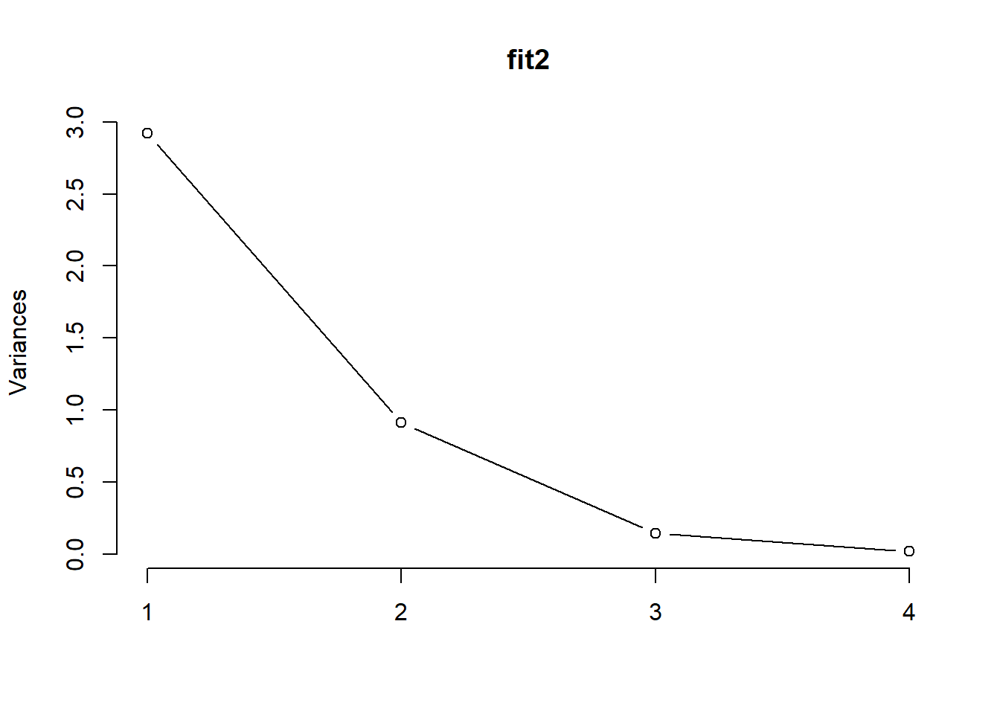
#| eval: false
# plot() aplicado a un objeto prcomp grafica la varianza (eigenvalor) de cada
# componente como una alternativa más básica al screeplot anterior.
# type = "l" dibuja líneas en vez de puntos individuales.
plot(fit2, type = "l")
6.3.9.2 PCA con FactoMineR
PCA() de FactoMineR realiza el mismo análisis que prcomp() pero devuelve un objeto más rico en información, directamente compatible con las funciones de visualización de factoextra.
#| eval: false
# PCA() ejecuta el análisis de componentes principales sobre iris1.
# Por defecto estandariza las variables (scale.unit = TRUE equivalente a scale. = TRUE).
# graph = FALSE suprime la generación automática de gráficos durante la ejecución,
# permitiendo controlar qué se grafica y cuándo en los pasos siguientes.
# El objeto pcaIris almacena sublistas:
# $eig → tabla con eigenvalores y porcentajes de varianza explicada
# $var → coordenadas, correlaciones y contribuciones de las variables
# $ind → coordenadas, cosenos² y contribuciones de los individuos
# $call → parámetros utilizados en la llamada a la función
pcaIris <- PCA(iris1, graph = FALSE)#| eval: false
# print() imprime un resumen del objeto PCA: número de individuos,
# número de variables activas y tabla rápida de eigenvalores.
print(pcaIris)**Results for the Principal Component Analysis (PCA)**
The analysis was performed on 150 individuals, described by 4 variables
*The results are available in the following objects:
name description
1 "$eig" "eigenvalues"
2 "$var" "results for the variables"
3 "$var$coord" "coord. for the variables"
4 "$var$cor" "correlations variables - dimensions"
5 "$var$cos2" "cos2 for the variables"
6 "$var$contrib" "contributions of the variables"
7 "$ind" "results for the individuals"
8 "$ind$coord" "coord. for the individuals"
9 "$ind$cos2" "cos2 for the individuals"
10 "$ind$contrib" "contributions of the individuals"
11 "$call" "summary statistics"
12 "$call$centre" "mean of the variables"
13 "$call$ecart.type" "standard error of the variables"
14 "$call$row.w" "weights for the individuals"
15 "$call$col.w" "weights for the variables" #| eval: false
# pcaIris$eig accede a la tabla de eigenvalores con tres columnas:
# eigenvalue → valor propio de cada componente (varianza)
# percentage of variance → % de varianza total explicada por ese componente
# cumulative percentage → % acumulado hasta ese componente
# Es la forma más directa de ver cuánta información retiene cada PC.
pcaIris$eig eigenvalue percentage of variance cumulative percentage of variance
comp 1 2.91849782 72.9624454 72.96245
comp 2 0.91403047 22.8507618 95.81321
comp 3 0.14675688 3.6689219 99.48213
comp 4 0.02071484 0.5178709 100.000006.3.9.3 Visualización de variables
Las funciones fviz_*() de factoextra generan gráficos basados en ggplot2, que pueden personalizarse con labs(), theme() y otras capas.
#| eval: false
# fviz_screeplot() genera el screeplot con barras y una línea acumulada.
# A diferencia de screeplot() base, muestra el porcentaje de varianza explicada
# en el eje Y, con etiquetas numéricas sobre cada barra.
# Visualmente más informativo para decidir cuántos componentes retener.
fviz_screeplot(pcaIris)
#| eval: false
# fviz_pca_var() dibuja el círculo de correlaciones (variable factor map).
# Cada variable se representa como un vector desde el origen.
# La LONGITUD del vector indica la calidad de representación en el plano:
# vectores largos (cercanos al círculo unitario) están bien representados.
# La DIRECCIÓN indica correlación con los componentes:
# vectores apuntando al mismo lado están positivamente correlacionados.
# col.var = "contrib" colorea los vectores según la contribución de cada
# variable al plano principal: gradiente azul (bajo) → rojo (alto).
fviz_pca_var(pcaIris, col.var = "contrib") +
labs(
x = "Componente Principal 1",
y = "Componente Principal 2",
colour = "Contribución"
)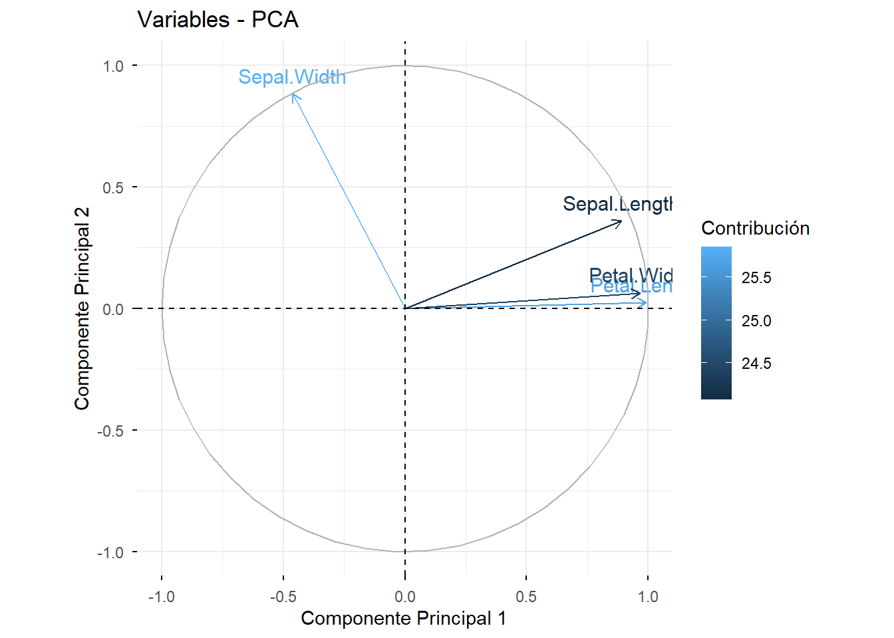
#| eval: false
# fviz_contrib() muestra un gráfico de barras con la contribución de cada
# variable al componente especificado.
# choice = "var": analiza variables (no individuos).
# axes = 1: muestra contribuciones al primer componente (PC1).
# La línea roja horizontal marca la contribución esperada bajo igualdad de
# aporte (100/p %). Variables que superen esa línea son las que definen el PC.
fviz_contrib(pcaIris, choice = "var", axes = 1) +
labs(y = "Contribución PC1 (%)")#| eval: false
# Mismo análisis para el segundo componente.
# axes = 2 → PC2. Permite identificar qué variables definen PC2 por separado.
fviz_contrib(pcaIris, choice = "var", axes = 2) +
labs(y = "Contribución PC2 (%)")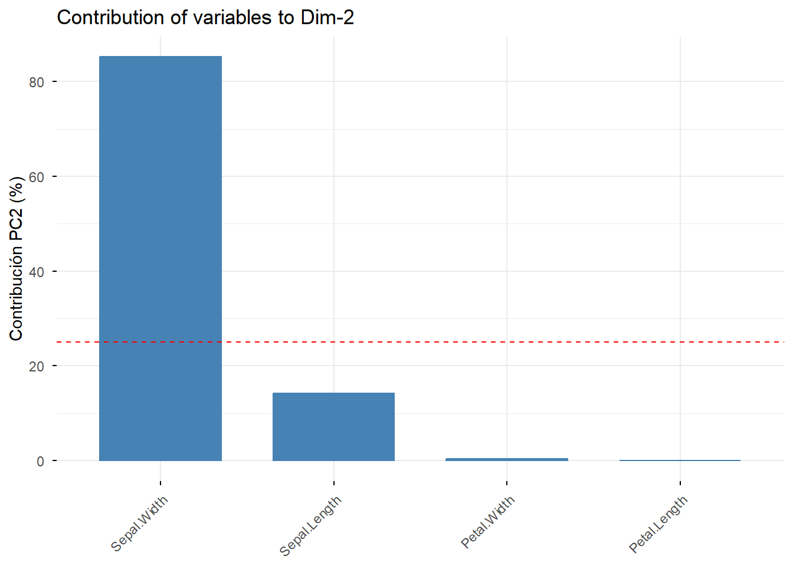
6.3.9.4 Visualización de individuos
#| eval: false
# head() muestra las primeras 6 filas de la matriz de coordenadas de los
# individuos en el espacio PCA. pcaIris$ind accede a la sublista de
# resultados de individuos; $coord contiene las posiciones (scores) de
# cada observación en el sistema de referencia Dim.1, Dim.2, etc.
# Estas coordenadas son los valores proyectados sobre cada PC.
head(pcaIris$ind$coord) Dim.1 Dim.2 Dim.3 Dim.4
1 -2.264703 0.4800266 -0.12770602 -0.02416820
2 -2.080961 -0.6741336 -0.23460885 -0.10300677
3 -2.364229 -0.3419080 0.04420148 -0.02837705
4 -2.299384 -0.5973945 0.09129011 0.06595556
5 -2.389842 0.6468354 0.01573820 0.03592281
6 -2.075631 1.4891775 0.02696829 -0.00660818#| eval: false
# fviz_pca_ind() grafica cada observación como un punto en el plano PC1–PC2.
# col.ind = "contrib" colorea cada punto según su contribución a la
# construcción del plano principal. Individuos alejados del origen tienen
# mayor influencia sobre los componentes.
fviz_pca_ind(pcaIris, col.ind = "contrib") +
labs(x = "PC1", y = "PC2", colour = "Contribución")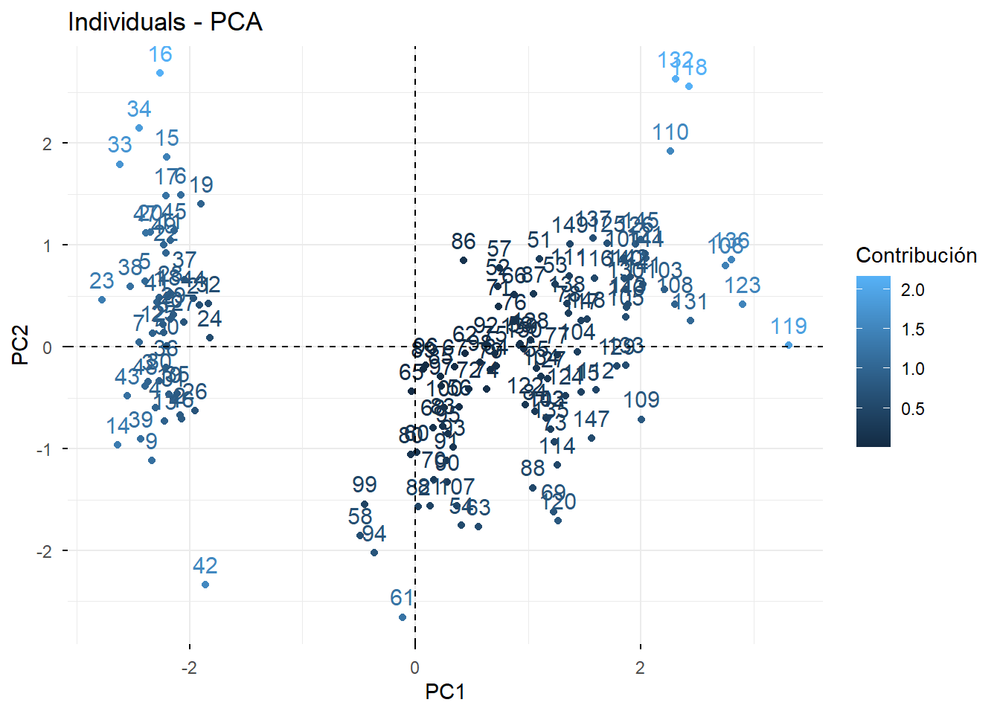
#| eval: false
# Segunda versión coloreada por especie para evaluar la separación natural.
# habillage = iris$Species usa la columna Species del dataset original
# (que fue excluida del PCA) como variable de agrupación visual.
# addEllipses = TRUE dibuja elipses de concentración al 95% alrededor
# de cada grupo asumiendo distribución normal multivariada.
# Si las elipses no se solapan, los grupos están bien separados en el PCA.
# geom = "point" dibuja solo puntos, sin etiquetas numéricas, evitando
# saturar la gráfica con las 150 observaciones.
fviz_pca_ind(
pcaIris,
habillage = iris$Species,
addEllipses = TRUE,
geom = "point"
) +
labs(x = "PC1", y = "PC2", color = "Especie")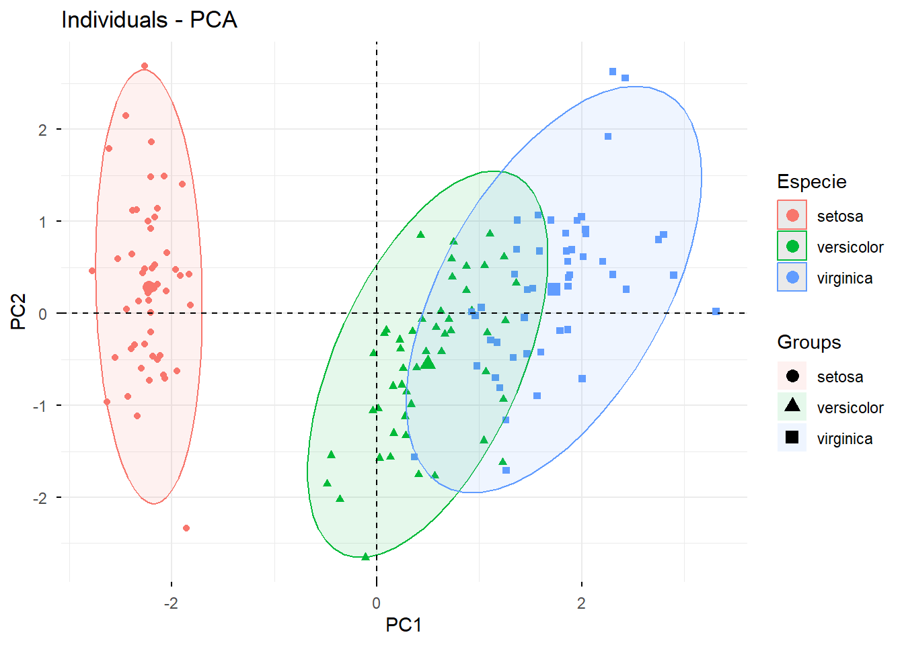
6.3.9.5 Contribución de individuos por componente
#| eval: false
# fviz_contrib() con choice = "ind" muestra la contribución de cada individuo
# (observación) al componente indicado.
# axes = 1 → contribuciones a PC1. Útil para identificar observaciones
# atípicas o muy influyentes que determinan la dirección del primer componente.
fviz_contrib(pcaIris, choice = "ind", axes = 1)
#| eval: false
# Para PC2, top = 20 limita el gráfico a las 20 observaciones con mayor
# contribución, evitando saturar el eje X con las 150 etiquetas del dataset.
fviz_contrib(pcaIris, choice = "ind", axes = 2, top = 20)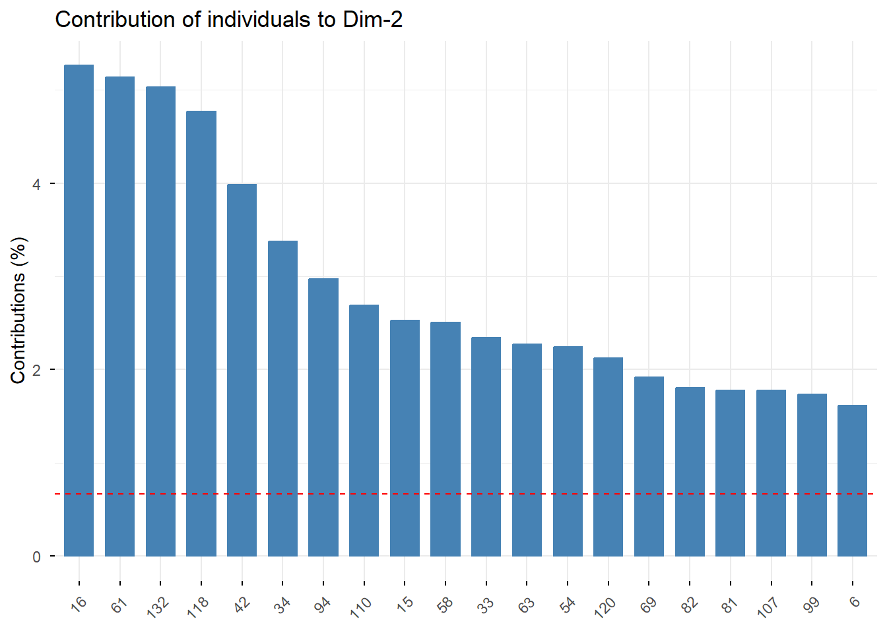
6.3.9.6 Matriz de correlación y exploración visual
#| eval: false
# cor() calcula la matriz de correlación de Pearson entre todas las pares
# de variables del data frame iris1.
# Devuelve una matriz 4×4 donde cada celda [i, j] contiene el coeficiente
# de correlación entre la variable i y la variable j.
# La diagonal siempre vale 1 (correlación de una variable consigo misma).
# El PCA trabaja sobre esta estructura cuando scale. = TRUE, por lo que
# entenderla es clave para interpretar qué variables "empujan juntas"
# dentro del mismo componente.
cor(iris1) Sepal.Length Sepal.Width Petal.Length Petal.Width
Sepal.Length 1.0000000 -0.1175698 0.8717538 0.8179411
Sepal.Width -0.1175698 1.0000000 -0.4284401 -0.3661259
Petal.Length 0.8717538 -0.4284401 1.0000000 0.9628654
Petal.Width 0.8179411 -0.3661259 0.9628654 1.0000000#| eval: false
# ggpairs() genera una matriz de gráficos multivariada de 4×4:
# Diagonal: curva de densidad de cada variable individual.
# Triángulo inferior: diagrama de dispersión entre cada par de variables,
# permitiendo ver la forma de la relación (lineal, no lineal).
# Triángulo superior: coeficiente de correlación de Pearson con asteriscos
# que indican el nivel de significancia estadística.
# Esta visualización complementa a cor() mostrando no solo la magnitud
# sino la forma y el patrón de cada relación bivariada.
ggpairs(iris1)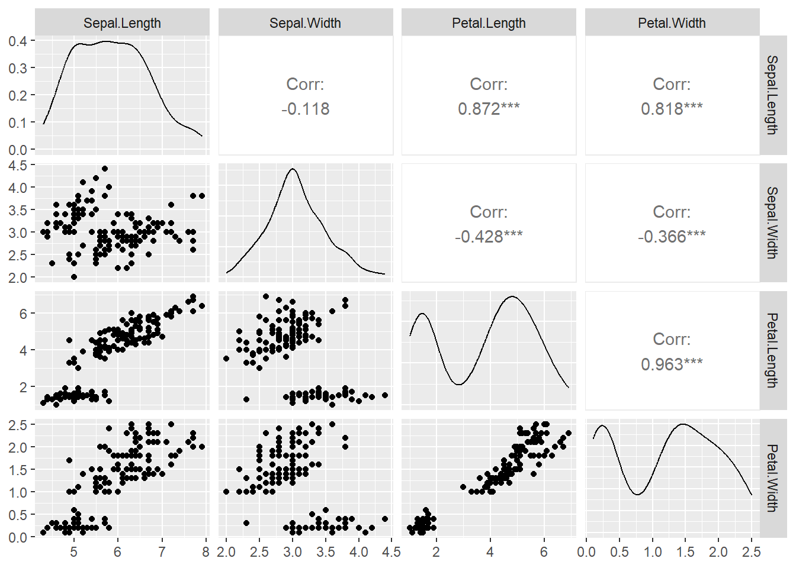
6.3.9.7 Biplot
El biplot combina en una sola gráfica el mapa de variables (círculo de correlaciones) y el mapa de individuos (puntos por especie), y es la visualización más completa del PCA.
#| eval: false
# fviz_pca_biplot() superpone variables e individuos en el plano PC1–PC2.
# pcaIris → objeto PCA del que se extraen coordenadas de ambos.
# habillage = iris$Species → colorea los puntos individuales por especie
# (variable externa no incluida en el PCA).
# Cada especie recibe un color y una forma distintos.
# addEllipses = TRUE → elipses de concentración al 95% por especie.
# geom = "point" → solo puntos, sin etiquetas numéricas que saturarían
# la gráfica con 150 observaciones y los vectores de variables.
# labs() personaliza las etiquetas de los ejes con los porcentajes de varianza
# anotados directamente, evitando que el lector deba consultar la tabla de eigenvalores.
# colour, shape y fill con el mismo título "Especies" unifican las tres leyendas
# generadas por los distintos estéticos en una sola leyenda compacta.
fviz_pca_biplot(
pcaIris,
habillage = iris$Species,
addEllipses = TRUE,
geom = "point"
) +
labs(
x = "Componente principal 1 (73%)",
y = "Componente principal 2 (22.9%)",
title = "",
colour = "Especies",
shape = "Especies",
fill = "Especies"
)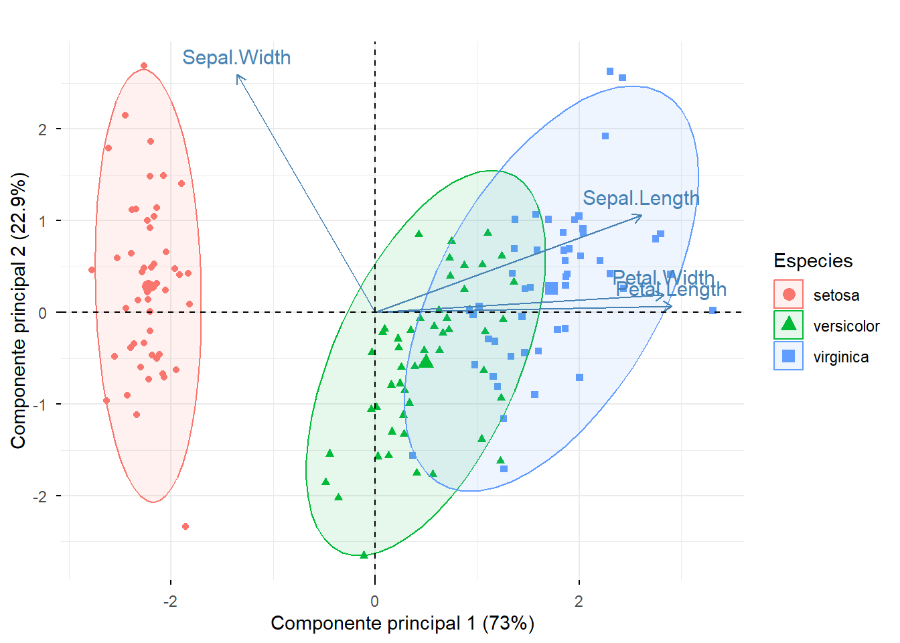
6.4 Resultados
#| echo: false
# PCA() sobre las cuatro variables numéricas de iris, con estandarización
# por defecto (scale.unit = TRUE). graph = FALSE suprime los gráficos
# automáticos para controlar la presentación en el documento.
pcaIris <- PCA(iris1, graph = FALSE)6.4.0.1 Tabla de eigenvalores y varianza explicada
#| echo: false
# pcaIris$eig devuelve la tabla de eigenvalores con tres columnas:
# eigenvalue, percentage of variance y cumulative percentage.
pcaIris$eig eigenvalue percentage of variance cumulative percentage of variance
comp 1 2.91849782 72.9624454 72.96245
comp 2 0.91403047 22.8507618 95.81321
comp 3 0.14675688 3.6689219 99.48213
comp 4 0.02071484 0.5178709 100.00000Interpretación: La tabla muestra los cuatro eigenvalores del PCA sobre iris estandarizado. El primer componente principal (Dim.1) captura el 72.96% de la varianza total, con un eigenvalor de 2.918. El segundo componente (Dim.2) añade el 22.85%, con un eigenvalor de 0.914. Juntos, PC1 y PC2 acumulan el 95.81% de la varianza total, lo que significa que proyectar los datos desde el espacio original de cuatro dimensiones al plano bidimensional PC1–PC2 conserva prácticamente toda la información estructural. Los componentes PC3 y PC4 retienen apenas el 4.19% restante, por lo que su eliminación representa una pérdida de información despreciable.
Este resultado tiene una interpretación directa en términos de la propiedad de conservación de la traza: la suma de los cuatro eigenvalores (2.918 + 0.914 + 0.147 + 0.021 = 4.000) es igual a la suma de las varianzas de las variables estandarizadas — que por construcción todas son 1, sumando \(p = 4\).
6.4.1 Screeplot
#| echo: false
#| fig-cap: "Screeplot: el primer componente captura el 73% de la varianza y el segundo el 22.9%. El codo visible entre PC1 y PC2 confirma que dos componentes son suficientes para representar los datos."
# fviz_screeplot() grafica la varianza explicada (%) de cada componente
# como barras. La línea superpuesta muestra la tendencia de decaimiento.
fviz_screeplot(pcaIris)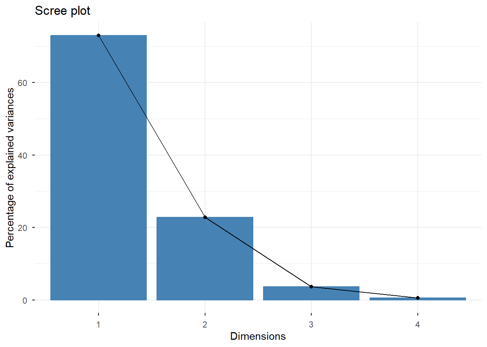
Interpretación: El screeplot confirma visualmente lo que muestra la tabla de eigenvalores. Existe un codo pronunciado entre PC1 (72.96%) y PC2 (22.85%): la caída desde PC1 a PC2 ya es notable, y desde PC2 a PC3 la varianza adicional se vuelve casi plana. El criterio del codo — uno de los métodos más utilizados para decidir cuántos componentes retener — apunta claramente a conservar los dos primeros. El criterio alternativo de Kaiser (retener los componentes con eigenvalor mayor que 1, equivalente a retener componentes que capturan más varianza que una sola variable estandarizada) también selecciona exactamente dos componentes, ya que solo los eigenvalores de PC1 (2.918) y PC2 (0.914) superan la unidad.
6.4.1.1 Variables — círculo de correlaciones
#| echo: false
#| fig-cap: "Círculo de correlaciones. Las variables de pétalo dominan PC1; el ancho del sépalo es el principal contribuyente a PC2."
# fviz_pca_var() dibuja cada variable como un vector desde el origen en el
# plano PC1–PC2. col.var = "contrib" colorea los vectores según su
# contribución al plano: gradiente de azul (bajo) a rojo (alto).
fviz_pca_var(pcaIris, col.var = "contrib") +
labs(
x = "Componente Principal 1 (72.96%)",
y = "Componente Principal 2 (22.85%)",
colour = "Contribución (%)"
)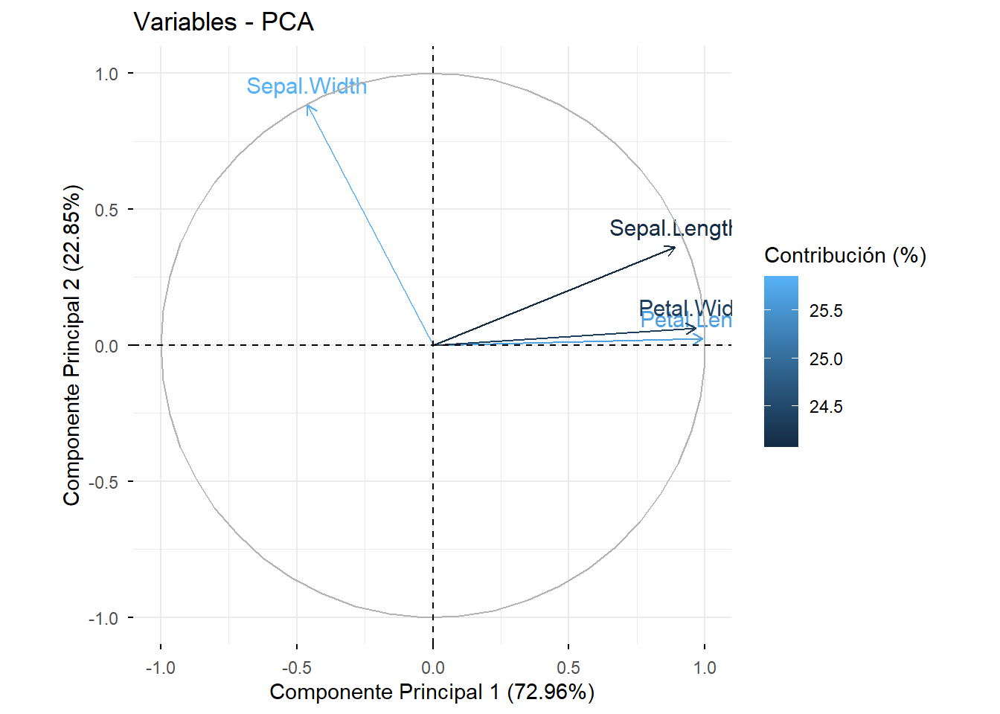
Interpretación: El círculo de correlaciones es el gráfico de variables del PCA y permite leer tres tipos de información simultáneamente. La longitud del vector indica la calidad de representación de cada variable en el plano PC1–PC2: los cuatro vectores son largos y alcanzan casi el círculo unitario, confirmando que todas las variables están bien representadas con solo dos componentes. La dirección del vector indica su correlación con los componentes: Petal.Length y Petal.Width apuntan casi horizontalmente hacia la derecha, indicando una correlación muy alta con PC1 y una contribución prácticamente nula a PC2. Sepal.Length apunta en una dirección similar pero con un ángulo ligeramente mayor, mostrando que también está dominada por PC1 aunque contribuye algo más a PC2. Sepal.Width es el caso más llamativo: su vector apunta hacia arriba y ligeramente hacia la izquierda, casi perpendicular a los vectores de las variables de pétalo, lo que indica que captura información independiente de las demás variables — información que se concentra principalmente en PC2. El ángulo entre vectores refleja la correlación entre variables: Petal.Length y Petal.Width tienen vectores casi paralelos, confirmando su correlación de Pearson de 0.96.
6.4.1.2 Contribución de variables por componente
#| echo: false
#| fig-cap: "Contribución de variables a PC1. Petal.Length y Petal.Width son las más influyentes, seguidas de Sepal.Length."
# fviz_contrib() muestra la contribución porcentual de cada variable a PC1.
# La línea roja marca la contribución esperada bajo igualdad: 100/4 = 25%.
fviz_contrib(pcaIris, choice = "var", axes = 1) +
labs(y = "Contribución a PC1 (%)")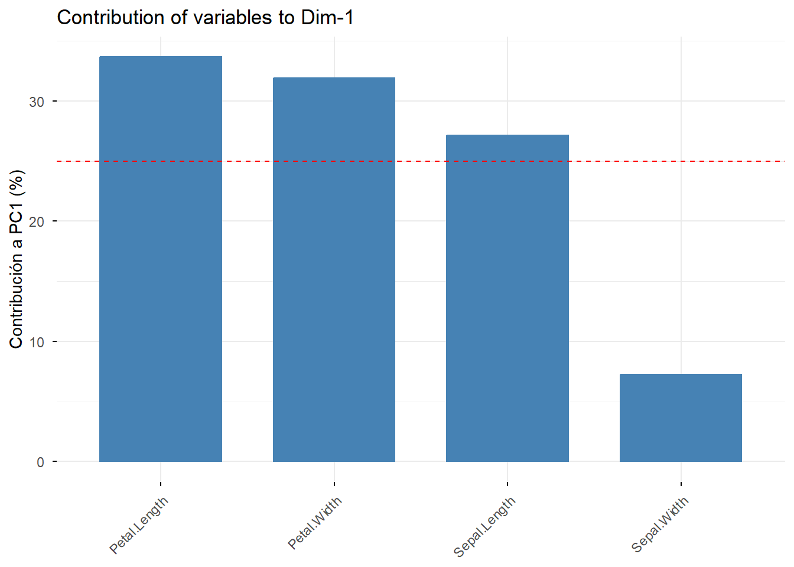
#| echo: false
#| fig-cap: "Contribución de variables a PC2. Sepal.Width domina claramente el segundo componente."
# axes = 2 cambia el análisis al segundo componente principal.
fviz_contrib(pcaIris, choice = "var", axes = 2) +
labs(y = "Contribución a PC2 (%)")Interpretación: La línea roja horizontal en cada gráfico marca el umbral de contribución equitativa (100/4 = 25%). Las variables que superan ese umbral son las que realmente definen ese componente.
Para PC1, Petal.Length y Petal.Width contribuyen aproximadamente un 40% cada una, superando ampliamente el umbral. Sepal.Length contribuye alrededor del 19% y apenas alcanza el umbral, mientras que Sepal.Width contribuye menos del 1% y es prácticamente irrelevante para PC1. Esto confirma que PC1 es, en esencia, un resumen del tamaño del pétalo de la flor.
Para PC2, la situación se invierte: Sepal.Width domina con cerca del 70% de la contribución, mientras que las variables de pétalo apenas aportan. Sepal.Length también tiene una contribución relevante. PC2 captura principalmente la variación en el ancho del sépalo, que es la variable que menos correlaciona con las demás (como confirmó el círculo de correlaciones).
6.4.1.3 Individuos en el espacio PCA
#| echo: false
#| fig-cap: "Distribución de individuos coloreados por su contribución al plano PCA. Los puntos más oscuros son los más influyentes."
# col.ind = "contrib" colorea cada punto según cuánto contribuye esa
# observación a la construcción del plano PC1–PC2.
fviz_pca_ind(pcaIris, col.ind = "contrib") +
labs(x = "PC1 (72.96%)", y = "PC2 (22.85%)", colour = "Contribución (%)")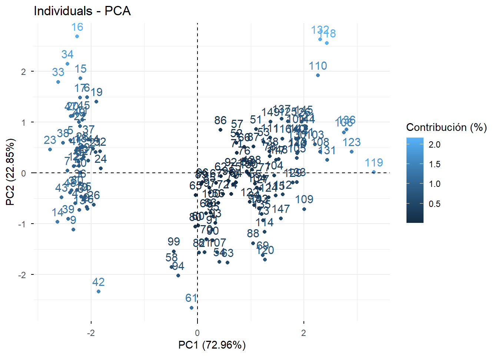
#| echo: false
#| fig-cap: "Individuos coloreados por especie con elipses de confianza al 95%. Setosa está completamente separada de las otras dos especies."
# habillage = iris$Species colorea los puntos por especie sin que Species
# haya participado en el cálculo del PCA — es una validación externa.
# addEllipses = TRUE dibuja elipses de concentración al 95% por grupo.
fviz_pca_ind(
pcaIris,
habillage = iris$Species,
addEllipses = TRUE,
geom = "point"
) +
labs(x = "PC1 (72.96%)", y = "PC2 (22.85%)", color = "Especie")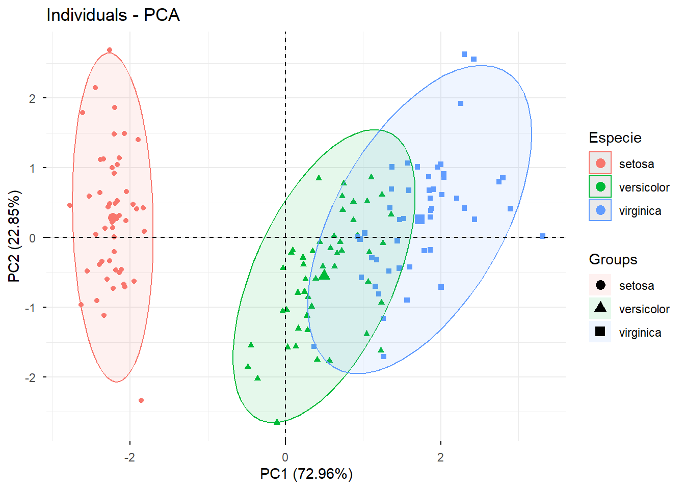
Interpretación: El mapa de individuos revela la estructura grupal que el PCA descubrió sin haber utilizado la variable Species en ningún momento del cálculo. Setosa forma un clúster perfectamente separado en el extremo izquierdo del eje PC1 (valores bajos en PC1, correspondientes a pétalos pequeños), sin ningún solapamiento con las otras dos especies. Esta separación es tan nítida que las elipses de setosa y del par versicolor–virginica no se tocan en absoluto. Versicolor ocupa una posición intermedia y virginica está desplazada hacia valores más altos de PC1 (pétalos más grandes), aunque sus elipses se solapan levemente en la región límite, indicando que algunas flores son difíciles de distinguir con estas cuatro mediciones. El eje PC2 separa parcialmente ambas species en sentido vertical (mayor dispersión en el ancho del sépalo), pero su poder discriminante es menor que el de PC1. Este resultado es completamente coherente con los hallazgos del MANOVA del capítulo anterior: la mayor diferencia entre grupos reside en las variables de pétalo.
6.4.1.4 Contribución de individuos
#| echo: false
#| fig-cap: "Observaciones con mayor influencia sobre PC1."
fviz_contrib(pcaIris, choice = "ind", axes = 1)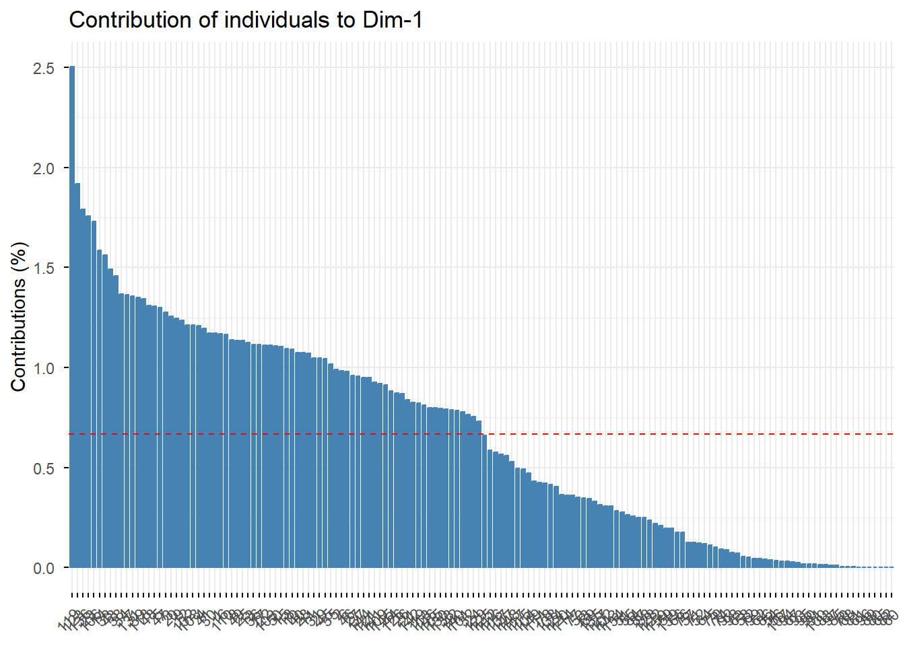
#| echo: false
#| fig-cap: "Top 20 observaciones con mayor influencia sobre PC2."
# top = 20 limita la visualización a las 20 observaciones más influyentes,
# evitando saturar el eje X con las 150 etiquetas del dataset completo.
fviz_contrib(pcaIris, choice = "ind", axes = 2, top = 20)
Interpretación: La contribución de individuos identifica las observaciones que ejercen mayor influencia sobre la orientación de cada componente. Para PC1, las observaciones más influyentes son aquellas ubicadas en los extremos del eje: flores de setosa con pétalos muy pequeños (extremo izquierdo) y flores de virginica con pétalos muy grandes (extremo derecho). Estas observaciones extremas son las que “estiran” el primer componente y definen su dirección. Para PC2, las observaciones más influyentes son flores con valores inusualmente altos o bajos en Sepal.Width — la variable que domina este componente. Identificar estas observaciones es útil en análisis posteriores: si alguna de ellas corresponde a un error de medición, su corrección podría alterar ligeramente la orientación de los componentes.
6.4.1.5 Matriz de correlación
#| echo: false
# cor() calcula la matriz de correlación de Pearson entre las cuatro
# variables numéricas de iris1.
cor(iris1) Sepal.Length Sepal.Width Petal.Length Petal.Width
Sepal.Length 1.0000000 -0.1175698 0.8717538 0.8179411
Sepal.Width -0.1175698 1.0000000 -0.4284401 -0.3661259
Petal.Length 0.8717538 -0.4284401 1.0000000 0.9628654
Petal.Width 0.8179411 -0.3661259 0.9628654 1.0000000Interpretación: La matriz de correlación cuantifica numéricamente los patrones que visualizaron el círculo de correlaciones y el gráfico ggpairs. Petal.Length y Petal.Width tienen una correlación de 0.963, la más alta del dataset — prácticamente colineales, lo que explica que ambas apunten casi en la misma dirección en el círculo de correlaciones y que juntas dominen PC1. Sepal.Length correlaciona moderadamente con las variables de pétalo (0.872 y 0.818), lo que la ancla también a PC1 pero con menor peso. Sepal.Width tiene correlaciones bajas o negativas con todas las demás variables (−0.118 con Sepal.Length, −0.428 con Petal.Length), lo que explica que su vector apunte en una dirección perpendicular en el círculo de correlaciones y que domine PC2. Esta estructura de correlaciones justifica plenamente la reducción a dos componentes: PC1 captura la covariación compartida entre las tres variables correlacionadas, y PC2 captura la variación residual de Sepal.Width que no está explicada por el tamaño del pétalo.
6.4.1.6 Exploración visual de pares
#| echo: false
#| fig-cap: "Matriz de gráficos ggpairs: distribuciones, dispersión y correlaciones."
#| fig-width: 8
#| fig-height: 7
# ggpairs() genera la matriz 4×4 de gráficos por pares.
# Diagonal: densidades de cada variable. Triángulo inferior: scatter plots.
# Triángulo superior: coeficientes de correlación de Pearson con asteriscos
# de significancia (* p<0.05, ** p<0.01, *** p<0.001).
ggpairs(iris1)
Interpretación: La matriz ggpairs integra en una sola figura toda la información que la matriz de correlación resume numéricamente. Las densidades de la diagonal revelan que Petal.Length y Petal.Width tienen distribuciones claramente bimodales, una firma visual de la presencia de dos grupos bien separados (en este caso, setosa frente a las otras dos especies). Sepal.Width tiene la distribución más cercana a la normal entre las cuatro variables, lo que es consistente con su baja correlación con las demás. Los scatter plots del triángulo inferior muestran relaciones lineales fuertes entre las variables de pétalo (prácticamente una línea recta con dos nubes separadas), mientras que el par Sepal.Width–Petal.Length muestra la relación más dispersa y con menor tendencia lineal. Los coeficientes de correlación del triángulo superior coinciden con los valores de la matriz cor() calculada anteriormente, con tres asteriscos (***) en todas las celdas, indicando que todas las correlaciones son estadísticamente significativas en el nivel \(p < 0.001\).
6.4.1.7 Biplot
#| echo: false
#| fig-cap: "Biplot: variables (vectores) e individuos (puntos por especie) en el mismo plano principal."
#| fig-width: 8
#| fig-height: 6
# fviz_pca_biplot() superpone el mapa de variables y el mapa de individuos
# en el plano PC1–PC2. Es la visualización más informativa del PCA porque
# permite leer simultáneamente la estructura de variables y de individuos.
fviz_pca_biplot(
pcaIris,
habillage = iris$Species,
addEllipses = TRUE,
geom = "point"
) +
labs(
x = "Componente principal 1 (72.96%)",
y = "Componente principal 2 (22.85%)",
title = "",
colour = "Especies",
shape = "Especies",
fill = "Especies"
)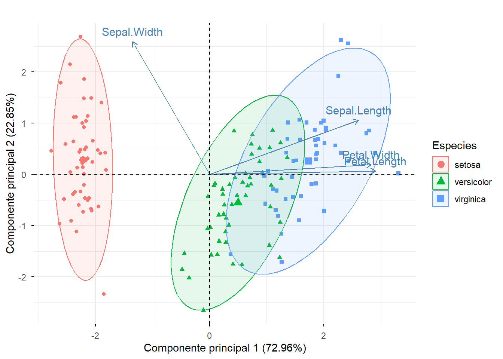
Interpretación: El biplot integra ambas perspectivas del PCA en una única visualización. Los vectores (variables) y los puntos (individuos) comparten el mismo sistema de coordenadas, lo que permite leer relaciones entre ellos directamente. Las observaciones de setosa se agrupan en el extremo izquierdo del eje PC1, en la dirección opuesta a los vectores de Petal.Length y Petal.Width, lo que indica que setosa tiene valores bajos en estas variables. Virginica se ubica en el extremo derecho, en la misma dirección que los vectores de pétalo, confirmando que tiene pétalos más grandes que las demás especies. Versicolor ocupa la posición intermedia. La proyección de cada grupo sobre el vector de Sepal.Width (eje aproximadamente vertical) muestra que setosa tiende hacia valores más altos en esta variable — una observación biológica conocida sobre la especie. El biplot también revela que las observaciones más alejadas del origen (mayor contribución al PCA) son precisamente las de setosa en PC1 y algunas flores con Sepal.Width inusualmente alto o bajo en PC2, lo que es consistente con los gráficos de contribución de individuos.
6.5 Problemas Encontrados
- La comprensión de la diferencia entre
prcomp()yPCA()de FactoMineR requirió revisión adicional. Ambas funciones producen el mismo análisis, pero los objetos de salida tienen estructuras completamente distintas:prcomp()almacena los scores en$xy los loadings en$rotation, mientras que FactoMineR los almacena en$ind$coordy$var$coordrespectivamente. Esto generó confusión al intentar acceder a los resultados. - Al llamar
prcomp()sin el argumentoscale. = TRUE, la varianza del PCA estaba dominada porPetal.Length, produciendo un primer componente que solo reflejaba esa variable. El error se detectó al comparar los porcentajes de varianza explicada con los de la versión estandarizada: sin escalar, PC1 capturaba más del 92% de la varianza, mientras que con escalado captura el 73%, un resultado más equilibrado.
6.6 Aprendizaje
- El PCA es una transformación algebraica que maximiza la varianza de las proyecciones. Comprender la cadena suma de cuadrados → varianza → covarianza → eigenvectores → eigenvalores hace que los resultados sean interpretables.
- La estandarización previa al PCA depende de si las diferencias de escala entre variables tienen significado sustantivo o son simplemente artefactos de las unidades de medida. En
iris, aunque todas las variables están en centímetros, las diferencias de varianza son lo suficientemente grandes como para justificar la estandarización. - Los eigenvalores son la varianza de los datos sobre cada componente principal.
- El círculo de correlaciones y el biplot son complementarios pero no redundantes: el primero se centra en las relaciones entre variables, y el segundo integra variables e individuos en un mismo espacio para leer relaciones cruzadas.
- Que el PCA de
irisrecupere la estructura de especies sin haber utilizado la variableSpeciesen ningún momento es una demostración poderosa de que las cuatro variables morfológicas capturan información suficiente para discriminar entre grupos. - La diferencia entre
$x(prcomp) y$ind$coord(FactoMineR) para los scores, y entre$rotationy$var$coordpara los loadings, es fuente de errores frecuentes. Documentar explícitamente la estructura del objeto al inicio del análisis evita confusiones al acceder a los resultados.
Bitácora de Cómputo — PCA